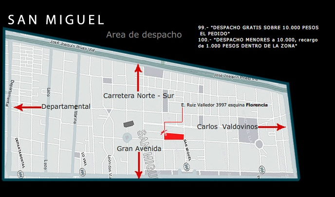

+51 123123123
Menu
Contacto / Delivery
SAN MIGUEL, E. Ruiz Valledor 3997 esq./Florencia - Telefono: 2551 1374
Contacto y Delivery
Contáctanos
Sugierenos ideas para mejorar nuestros productos y servicios.
Contáctanos a:
contacto@sushikatan.cl
San Miguel, E. Ruiz Valledor 3997 esq./Florencia
2551 1374
Zona de despacho
